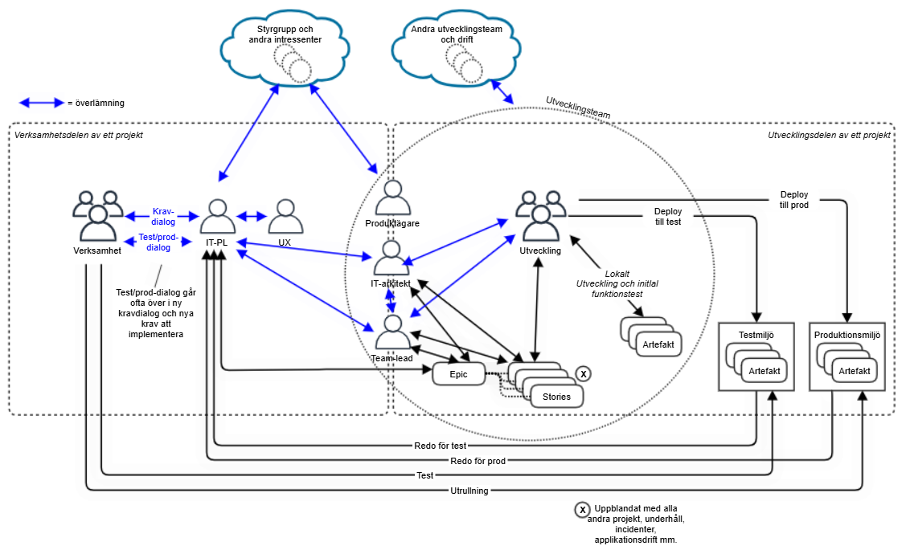

Det agila manifestet skapades 2001 och fyller i år alltså 25 år – värt att uppmärksamma. Det är en uppsättning värderingar och principer för mjukvaruutveckling som prioriterar flexibilitet, samarbete och fungerande system framför rigida processer och omfattande dokumentation.
Manifestet vilar på fyra huvudvärderingar:
- Individer och interaktioner framför processer och verktyg.
- Fungerande programvara framför omfattande dokumentation.
- Kundsamarbete framför kontraktsförhandling.
- Anpassning till förändring framför att följa en plan.
Dessa fyra värderingar kompletteras av 12 principer som betonar vikten av täta leveranser, nöjda kunder, hållbar utveckling och självorganiserande team.
För att förstå agilt arbetssätt och varför det agila manifestet skapades är det bra att känna till dess ursprung. Under slutet av 1990-talet överskred mjukvaruprojekt ofta sina budgetar och missade sina planerade leveransdatum. Dessutom levererades produkter som vid färdigställandet inte längre motsvarade kundernas faktiska behov. Det dominerande tillvägagångssättet vid den tiden, ofta kallat vattenfallsmodellen, krävde att teamen definierade alla krav i detalj innan utvecklingsarbetet ens påbörjades, och på marknader med snabb förändringstakt visade sig detta bli mer och mer opraktiskt, och därför behövde nya arbetssätt skapas.
Som gammal i gården jobbade jag med systemutveckling redan innan manifestet skrevs och har jobbat enligt såväl Scrum, Kanban, Scrumban, och under en kortare period till och med enligt Extreme Programming (XP). När ett utvecklingsteam (upp till 6 deltagare) efter en tid blivit samkört brukar metodiken fungera bra, egentligen oavsett vilken man väljer, så hur kommer det sig då att projekt fortfarande överskrider sina budgetar och förlänger sina tidsplaner? Det försöker jag reda i nedan.
När det agila rinner ut i ett vattenfall
Man kan faktiskt kalla sig agil och ändå driva ett vattenfallsprojekt. Vad menar jag med det? Jo, utvecklingsteamet arbetar i sprintar, håller dagliga avstämningar, demonstrerar fungerande programvara och prioriterar sin backlog. Men runt teamet ser allt ut som vanligt: verksamheten skriver en omfattande kravspecifikation, budgeten beslutas i förväg, en styrgrupp låser omfattning och slutdatum och därefter lämnas beställningen över till utvecklarna. Agilt på insidan. Vattenfall på utsidan.
Problemet är dock att dessa två delar bygger på helt olika antaganden. Det agila teamet utgår från att kunskap uppstår under arbetets gång. Behov förändras, lösningar måste prövas och återkoppling från användarna påverkar vad som bör byggas. Projektstyrningen utgår däremot ofta från att man redan från början kan veta vad som ska levereras, vad det kommer att kosta och när det ska vara färdigt. Teamet förväntas alltså anpassa sig efter ny kunskap, men samtidigt hålla fast vid en plan som skapades innan kunskapen fanns. Där börjar problemen.
För att få finansiering måste verksamheten ofta presentera ett business case med tydlig omfattning, budget, nytta och slutdatum. Det är begripligt att ledningen vill veta vad pengarna ska användas till, men kalkylen behandlas lätt som ett löfte i stället för som en hypotes. När teamet senare upptäcker att ett behov har missförståtts, att en funktion inte skapar någon nytta eller att en enklare lösning räcker, borde detta ses som värdefullt lärande. I stället beskrivs det ofta som en avvikelse. Planen blir viktigare än resultatet.
Backloggen riskerar då att bli en kravspecifikation i nya kläder. Produktägaren får flytta kraven upp och ned, men inte ifrågasätta varför de finns där. Allt har redan lovats till styrgruppen, beställaren eller kunden. Det agila handlingsutrymmet reduceras till att välja i vilken ordning en på förhand bestämd lösning ska produceras. Samtidigt får produktägaren ofta ansvar utan verkligt mandat. Personen förväntas fatta snabba beslut men måste först förankra dem med linjechefer, jurister, säkerhetsfunktioner, referensgrupper och en styrgrupp som möts en gång i månaden. Teamets återkopplingscykel är kanske två veckor. Organisationens beslutscykel är flera månader om det vill sig illa. Då spelar det mindre roll hur snabbt utvecklarna arbetar. Agilitet handlar främst inte om hur fort någon programmerar, utan om hur snabbt hela organisationen kan gå från antagande till återkoppling och från återkoppling till beslut. Ett snabbt utvecklingsteam i ett långsamt beslutssystem är inte en agil organisation.
Ytterligare ett problem är verksamhetens deltagande. Agila arbetssätt bygger på nära samarbete mellan dem som utvecklar lösningen och dem som känner verksamheten och användarnas behov. Men verksamhetens representanter förväntas ofta bidra vid sidan av sina ordinarie arbetsuppgifter. När tiden inte räcker delegeras kontakten till en projektledare, kravanalytiker eller produktägare. Därmed återkommer de överlämningar som det agila arbetssättet var tänkt att minska: verksamheten lämnar behov till en kravfunktion, som lämnar krav till utveckling, som lämnar resultat till test, drift eller förvaltning. Varje grupp kan vara effektiv. Helheten blir ändå långsam.
Ekonomistyrning, juridik och informationssäkerhet måste naturligtvis finnas kvar. Problemet uppstår när de organiseras som stora kontrollstationer där omfattande dokument ska godkännas innan arbetet får fortsätta. Då byggs ett traditionellt vattenfall runt den iterativa utvecklingen.
Forskningen om stora agila förändringar visar också att de största hindren sällan är teamens arbetsformer. Svårigheterna finns i styrning, ansvar, kultur, finansiering och samordning mellan organisatoriska delar (Boehm & Turner, 2005; Dikert et al., 2016; Hoda et al., 2011; Stettina & Hörz, 2015; Serrador & Pinto, 2015). Det är betydligt enklare att införa sprintar än att förändra budgetprocesser, beslutsmandat och chefers sätt att följa upp verksamheten. Därför nöjer sig många organisationer med den enklare förändringen. Utvecklarna får nya roller, nya möten och nya tavlor. Ledningen fortsätter att efterfråga fasta besked om omfattning, kostnad och slutdatum. Resultatet blir inte agilitet utan tätare rapportering inom ett traditionellt projektsystem av klassisk vattenfallsmodell.
Bilden nedan beskriver just ett sådant projektsystem från verkligheten. Jag tänker inte beskriva den i detalj – den får tala för sig och visa hur komplext uppbyggt, med mängder av överlämningar, projekt kan drivas i stora organisationer (vilket jag själv sett på nära håll vid flera tillfällen).

En mer genuint agil styrning innebär inte att planer, budgetar eller dokumentation försvinner. Det innebär att de får omprövas när verkligheten förändras. Styrgrupper behöver följa upp nytta, risker och lärande, inte bara antal levererade funktioner. Produktägare behöver mandat, inte bara ansvar. Verksamhetens experter behöver avsatt tid att arbeta tillsammans med teamet (där det enligt mina erfarenheter oftast brister mest). Finansiering behöver kunna omprövas när ny kunskap visar att organisationen bör ändra riktning. Först när även verksamheten och styrningen accepterar att lösningen växer fram under arbetets gång blir organisationen agil på riktigt. Annars har man bara gjort utvecklarna agila längst ned i ett vattenfall, och då spelar det ingen roll hur många post-it-lappar som sitter på väggen, vattnet rinner ändå åt samma håll.
Sammanfattningsvis, de viktigaste punkterna om varför organisationers utveckling alldeles för ofta bedrivs enligt vattenfallsmodellen förtäckt i agila termer:
- Budget och tidplan blir löften. Ny kunskap behandlas som avvikelse.
- Produktägaren saknar mandat. Beslut fastnar i styrgrupper och förankring.
- Verksamheten är för långt bort. Överlämningar ersätter nära samarbete.
- Styrningen förblir traditionell. Agila team arbetar längst ned i ett vattenfall.
Så, fråga er själva, arbetar ni agilt, egentligen?!
Källor
- Boehm, B. & Turner, R. (2005). Management Challenges to Implementing Agile Processes in Traditional Development Organizations. IEEE Software, 22(5), 30–39.
- Dikert, K., Paasivaara, M. & Lassenius, C. (2016). Challenges and Success Factors for Large-Scale Agile Transformations: A Systematic Literature Review. Journal of Systems and Software, 119, 87–108.
- Hoda, R., Noble, J. & Marshall, S. (2011). The Impact of Inadequate Customer Collaboration on Self-Organizing Agile Teams. Information and Software Technology, 53(5), 521–534.
- Manifest för Agil systemutveckling (2001). https://agilemanifesto.org/iso/sv/manifesto.html
- Stettina, C. J. & Hörz, J. (2015). Agile Portfolio Management: An Empirical Perspective on the Practice in Use. International Journal of Project Management, 33(1), 140–152.
- Serrador, P. & Pinto, J. K. (2015). Does Agile Work? A Quantitative Analysis of Agile Project Success. International Journal of Project Management, 33(5), 1040–1051.